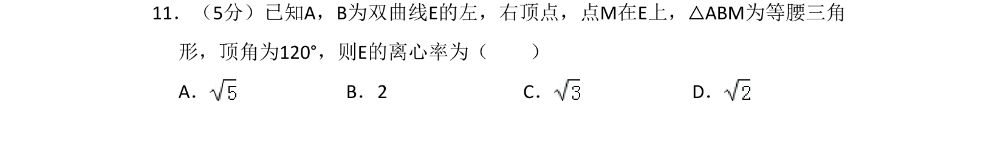
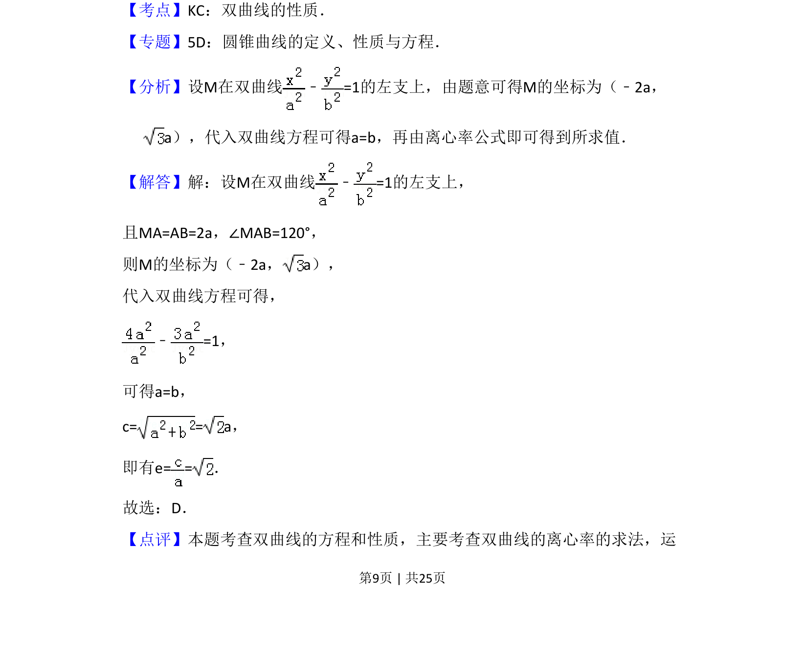

考点：双曲线性质 离心率 标准方程 几何条件转化

利用等腰三角形和顶角条件求M坐标，代入双曲线方程得a=b，从而求出离心率

📄 原 PDF 第 9 页：
素材/真题/吉林/2008-2024·（吉林）数学高考真题/2015年高考数学试卷（理）（新课标Ⅱ）（解析卷）.pdf
11．（5分）已知A，B为双曲线E的左，右顶点，点M在E上，△ABM为等腰三角 形，顶角为120°，则E的离心率为（ ） A．B．2 C．D．
【考点】KC：双曲线的性质．菁优网版权所有 【专题】5D：圆锥曲线的定义、性质与方程． 【分析】设M在双曲线 ﹣=1的左支上，由题意可得M的坐标为（﹣2a， a），代入双曲线方程可得a=b，再由离心率公式即可得到所求值． 【解答】解：设M在双曲线 ﹣=1的左支上， 且MA=AB=2a，∠MAB=120°， 则M的坐标为（﹣2a，a）， 代入双曲线方程可得， ﹣=1， 可得a=b， c= = a， 即有e= =． 故选：D． 【点评】本题考查双曲线的方程和性质，主要考查双曲线的离心率的求法，运